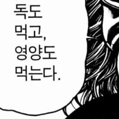

한국의 80,90년대생들이 면역력이 강한 이유
댓글
거기에 쥐가 보임
과자투입구에 커버가 있으면 sss급 오락기 ㅋㅋㅋ
엌 그거 초코맛 과자 아님? 무인편의점에 팜
꾀돌이
아 문방구 스콜 사과맛 땡긴다...
게임기에서 나오는 과자도 눅눅하면 안먹고 바삭하면 먹었지ㅋㅋㅋ
저거 다 먹고 소독차 한바퀴 따라가면 다 소독되서 괜찮다고!
나 어릴때 100원짜리 오락기 과자나오는 투입구에서 바퀴벌ㄹ ㅔ나오는거 보고 그 후로는 안먹었음.. 충격..
씨양념, 소독차, 모래 놀이터, 넝마 축구공, 100원짜리 오락기, 컵떡볶이
진짜 얼마간 도움됐을거같긴함
ㅠ저기서 못 살아남고 두드러기를 달고 삼..
옛날에 소독차 바로 뒤에서 입벌리고 연기 존나 마시면서 뛰어가다가 토 존나했던 기억나네.. ㅋㅋㅋ
달고나랑 오징어 200원짜리 ㅈㄴ 사먹었지..
어릴때 5초룰도 없었음 떨어진 음식이 비싸냐 싸냐에 따라
다시 줏어먹음
주변에 거지라고 놀릴놈 없으면 냅다 다시 주워먹음 ㅋㅋ
문구점 백원이었나 이백원인가 불량 양념쥐포 기계넣고 구워먹는게 존맛이엇는데
기름코팅이 있어야 맛있는거임.
떡볶이는 고추장 코팅이 있어야 깊은맛이 나는거고
례맥 례맥 례맥
신문지 종이 콘으로 말아서 거기다 뻔데기 담아 팔음
저런거 부모님이 먹지 말라고 하셔서 안 먹었다
저거먹고 배아파서 뒹굴거리면 불량식품 먹었다고 혼날까봐 말도 못하고 그랬음ㅋㅋㅋ
땅바닥 떨어진거 많이 줏어먹었다...
ㄹㅇㅋㅋㅋㅋㅋㅋ
씨름장 모래놀이가 국룰 아닌교
비오면 치수 관리자 됨
전형적인 생존 편향의 오류
강해진게 아니고 강한자들만 살아남은게지 후우
가장 마지막에 있는 닭강정 학교앞에서 500원에 팔았는데
그거 먹고 장염 다이렉트로 걸려서 3일 학교 쉼 ㅋㅋㅋㅋㅋ
저거를 1주일에 한번 애들 등교 안하는 날 닦아볼까 생각은 안했던걸까!
셀프 솜사탕 기계 안쪽 손톱으로 긁어서 설탕 먹던놈
달고나 기계 위 소다 집어먹고 울던놈도 오락기 꾀돌이는 걸렀음
땅바닥에 떨어진거 존나 주워먹다가 가와사끼 걸려서 죽다 살아남
신기하게 그 이후로 소화기계 질병은 단 한번도 걸린적 없음
아바투르: "소화 기관 강화 완료"
농담이 아닌게 어렸을때 가능한 많은 식재료랑 균에 노출되야 건강하다고함 알레르기도 없고
+ 학교 놀이터에 흙밭에서 존나 구르고 놀았지
열로 가열하는건 괜찮은거 아님?
매번 드는 의문임
면역력이 딱히 강하다는 조사 결과도 없는데 별결로 부심이 나오네
우리 좀 웃으며 살 수는 없을까...
저 닭강정 상온에서 사긴했는데, 렌지에 돌려먹엇음 ㅋㅋ
저거 양념맛이 ㄹㅇ 기가막혔는데
다먹어봤네 ㅋㅋ 로만닭강정은 아직도 개당 600원에 팔더라 기름쩐내 조금 나는거 제외하곤 생각보다 매콤 칼칼 짭잘 고소 달달 해서 술안주로 나쁘지않은데 칼로리가 274임 개높아
연탄에 다이렉트로 쫀득이 구워먹엇던게 레전드
닭강정 냉동인게 충격이네
저걸 상온에 얼마나 둿을지 상상도 안감
ㅡㅡㅡㅡㅡㅡㅡㅡㅡㅡㅡㅡㅡㅡㅡㅡㅡㅡㅡㅡㅡㅡ
나이 30넘게 쳐먹고 커뮤니티하고있는 틀딱들이 정모할 예정입니다
저 닭강정 존나 자극적인게 맛도리였는데 냉동보관이라니..
일단 흙에서 많이 논게 도움이 됐음
운동장도 흙바닥 뒷산 놀이터도 다 흙바닥

")
겜 한판 끝나면 두루루룱 하고 게임기에서 나오는 콩과자 같은 거 한입에 탁 털어넣고 석수(포도맛) 드링킹하고 다음판 하고 그랬어